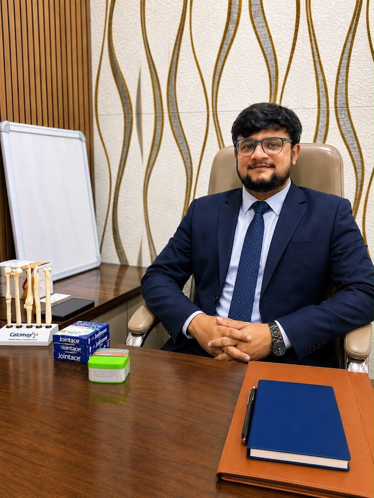

Fracture & Trauma Management
Care for broken bones and injuries from falls, road traffic and workplace accidents.

MBBS, MS (Orthopaedics)
Consultant Orthopaedic / Trauma Surgeon · Orthopaedic Surgeon, Spine & Pain Specialist, Spine Surgeon (Ortho)
Dr. Adarsh D. Patil consults at Dr. Adarsh Patil's Orthopaedic Clinic in Sector 1, Sanpada, Navi Mumbai. His practice covers bone, joint and spine conditions, sports and ligament injuries, and fracture and trauma care, in both non-surgical and surgical forms. Patients from Sanpada, Vashi, Belapur and across Navi Mumbai are seen at the clinic.
Consultations include clinical examination, review of imaging and reports, an explanation of the diagnosis, and a treatment plan discussed with the patient. Surgical treatment, when it is indicated, is carried out at affiliated hospitals in Navi Mumbai.
Dr. Adarsh D. Patil provides consultation and treatment across the full range of bone, joint, spine and trauma conditions at the clinic in Sector 1, Sanpada.
Care for broken bones and injuries from falls, road traffic and workplace accidents.
Assessment and treatment of knee, hip and shoulder pain, osteoarthritis and inflammatory arthritis.
Diagnosis and management of joint stiffness, swelling, reduced range of motion and instability.
Evaluation of back and neck pain, disc-related problems and nerve compression symptoms.
Ligament tears, shoulder problems and sports-related injuries with a return-to-activity plan.
Surgical and non-surgical treatment of hand and wrist conditions, following a fellowship in hand surgery.
Reduced bone density, fracture risk assessment and management of metabolic bone conditions.
Ilizarov external fixation for complex fractures, non-union and deformity correction.
Consultation and treatment across bone, joint, spine and trauma care. Each service is described in more detail on the services page.
Assessment and treatment of joint pain, osteoarthritis, inflammatory arthritis, gout and osteoporosis, including medication, injections and rehabilitation guidance.
Read MoreEvaluation of back and neck pain, disc-related problems and nerve compression, with conservative care, physiotherapy referral and spine surgery when indicated.
Read MoreCare for fractures and injuries, including plaster and bracing, fracture fixation, and Ilizarov external fixation for complex or non-healing bone injuries.
Read MoreMinimally invasive keyhole joint surgery (arthroscopy) for shoulder and knee problems, and joint replacement surgery (arthroplasty) for advanced joint damage.
Read MoreSurgical and non-surgical treatment of hand and wrist conditions, following a completed fellowship in hand surgery.
Read MoreDiagnosis and management of ligament injuries, sports-related injuries, shoulder problems and bone deformities, with a return-to-activity plan.
Read MoreTreatment plans are built around the activity you need to return to — walking, working, climbing stairs or sport — and are reviewed at follow-up.
Surgical procedures and inpatient care are carried out at the following hospitals in Navi Mumbai.
Sanpada, Navi Mumbai
Vashi, Navi Mumbai
Sanpada, Navi Mumbai
A consultation follows the same clear sequence, so you know what happens at each step.
The consulting rooms, reception and examination area at Sector 1, Sanpada. Select a photo to view it larger.
From sports and workplace injuries to age-related joint and bone conditions, appointments can be arranged Monday to Sunday.
Reviews published by patients on the clinic’s Google Business Profile. They are shown here as written by their authors.
Reviews are the opinions of their individual authors and are sourced from Google. They describe personal experience and are not a promise or guarantee of any medical outcome. Last synced —.
Practical information about booking, what to bring, and how the clinic works.
Consultations are by appointment, Monday to Sunday. Call or send a WhatsApp message to +91 70205 25460, or email adarshpatilortho@gmail.com with a preferred day and time, and the clinic will confirm a slot.
Please bring any previous X-rays, MRI or CT films and reports, blood test results, a list of the medicines you currently take, discharge or operation summaries from earlier treatment, and a photo identity document.
A referral is not required. You can contact the clinic directly to book a consultation. If another doctor has given you a referral letter or reports, please bring them along.
The clinic sees joint pain, arthritis, osteoporosis, gout, back and neck pain, shoulder problems, fractures and trauma, ligament injuries, sports injuries and bone deformities.
The Sanpada clinic is used for consultation, clinical examination, dressing and follow-up. Surgical procedures are performed at the affiliated hospitals: MPCT Hospital, Sanpada; MGM Hospital & Medical College, Vashi; and Suraj Hospital, Sanpada.
Consultations can be held in English, Hindi or Marathi.